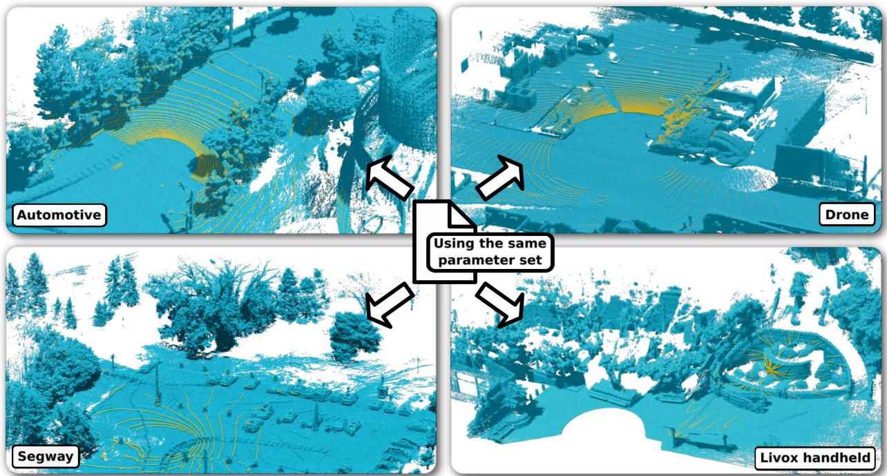
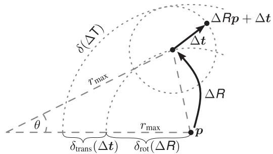

阶段 D · 激光主干 / Lesson 0088
KISS-ICP（2023）：反工程化的极简之作
在一整季「越来越复杂」之后，有人把系统砍到只剩七个参数——然后赢了 🪶
🎯 主题：点对点 ICP · 自适应阈值 · 免调参 · 纯激光
👥 作者：Ignacio Vizzo、Tiziano Guadagnino、Benedikt Mersch、Lucas Wiesmann、Jens Behley、Cyrill Stachniss（波恩大学）
📅 2023 · RA-L / ICRA 2023 · KISS-ICP: In Defense of Point-to-Point ICP – Simple, Accurate, and Robust Registration If Done the Right Way
本节目标
读完你应该能：解释标题里 In Defense of 是在替谁辩护、辩护的理由是什么；说出 If Done the Right Way 具体指哪几件事、每件事解决什么问题；说清「免调参」到底免掉的是什么；并且能回答一个关键问题——一个不用 IMU 的纯激光里程计，凭什么在剧烈运动下还站得住。
和前面课程怎么接
这一课是我们前四季一路看下来的一个「对照组」。接 0006 课（特征法 vs 直接法的分岔）；接 0074 课——LOAM 讲过一个「一帧内匀速」的假设，本篇也用它，但用得更省；接 0023 课——PCL 里那几个 ICP 家族成员，本篇挑的是最朴素的那个；最后接 0084／0085／0086 这条「不提特征 + 更细粒度」的主线，本篇正好站在这条线的另一侧 。
1. 标题里那句 In Defense of 是什么意思
先把标题完整读一遍：
论文标题
KISS-ICP: In Defense of Point-to-Point ICP – Simple, Accurate, and Robust Registration If Done the Right Way 为点对点 ICP 辩护 ——只要做法正确，它就简单、精确、鲁棒。」
是的，你的直觉是对的：这篇论文就是在说「点对点 ICP 被低估了，只要做对就够用」。 这句话在原文里有一处非常直白的表述，几乎是全篇的题眼：
「Sum: good old point-to-point ICP is a surprisingly powerful tool, and there is little need to move to more sophisticated approaches if the basic components are done well .」老派的点对点 ICP 是一个出乎意料地强大的工具；只要基础零件做得好 ，就没什么必要转向更精巧的做法。）
要理解这句话为什么有分量，得先知道「点对点 ICP」在学术圈的地位。它是最古老的那种配准方法——30 年前由 Besl 和 McKay 提出 （原文明确提到这个年份与作者）。它的做法朴素到不能再朴素：在当前帧里取一个点，去上一帧里找离它最近的那个点，然后算这两点之间的距离，想办法把这个距离的总和压到最小。
这三十年间，大家在这上面叠了越来越多的东西：提取特征、学特征、加回环、上因子图……原文的观察是：现在的系统普遍对机器人运动 （比如匀速、比如平坦地面）和对环境结构 做了很多假设，来实现准确鲁棒的配准。
而作者要挑战的，是下面这个「现状陈述」——原文说，据他们所知：
「no existing 3D LiDAR odometry approach is free of parameter tuning and works out of the box in different scenarios, using arbitrary LiDAR sensors, supporting different motion profiles…」没有任何一个现有的三维激光里程计方法，能做到「免调参」并且开箱即用地适应不同场景、任意型号的激光雷达、不同的运动剖面。 ）
注意这句话里藏了四个「不同」：不同场景、不同传感器、不同运动方式、不同机器人。作者的意思是：不是没人做得准，而是没人做到「一套参数打天下」。 而他们给出的答案是——回到那个最老的 ICP，把几个基础零件做对，然后「一套参数打天下」。
「KISS」就是 keep it small and simple
顺便把名字说清楚。原文在交代三条主张时用了这么一个说法：
「Our keep it small and simple approach exploiting point-to-point ICP is (i) on par with state-of-the-art odometry systems, (ii) can accurately compute the robot's odometry in a large variety of environments and motion profiles with the same system configuration, and (iii) provides an effective solution to motion distortion without relying on IMUs or wheel odometers.」
三句话拆开看很有意思：
主张 (i)：精度不掉队
它和当前最好的里程计系统打平 。注意是「打平」，不是「碾压」——这个措辞很重要，后面讲局限时会回到这一点。
主张 (ii)：一套参数打天下
在大量不同环境与运动方式下，用同一套系统配置 就能准确算出里程计。这是全篇最核心的主张。
主张 (iii)：不靠 IMU 也能去畸变
它不依赖 IMU，也不依赖轮速计 ，就能解决运动畸变问题。这一条我们在第 5 节专门讲。
它还刻意不做这些事
原文明确列出：这个设计既不用精巧的特征提取技术，也不用学习方法，更不用回环检测 。把这三样都拿掉，剩下的就是把基础件做对。

原图注（Fig. 1）： Point cloud maps (blue) generated by our proposed odometry pipeline on different datasets with the same set of parameters. We depict the latest scan in yellow. The scans are recorded using different sensors with different point densities, different orientations, and different shooting patterns. The automotive example stems from the MulRan dataset [15]. The drone of the Voxgraph dataset [23] and the segway robot used in the NCLT dataset [5] show a high acceleration motion profile. The handheld Livox LiDAR [17] has a completely different shooting pattern than the commonly used rotating mechanical LiDAR.怎么看这张图： ① 这是全篇的「招牌图」，你要看的是它把四种完全不同的东西并排放在了一起 ：一辆车、一台无人机、一台平衡车、一台手持设备；② 图注自己给出了三个「不同」——点密度不同、安装朝向不同、扫描模式不同 ，而且还特别点出无人机与平衡车是高加速度 运动；③ 最关键的一句是开头那半句：同一套参数 。屏幕上四幅地图都出自同一份配置，没有为任何一个数据集调过参；④ 蓝色是累积出来的地图、黄色是当前这一帧——两张颜色如果对得上（黄点正好嵌在蓝点构成的结构上），就说明配准是准的。要记住的一句话： 这篇论文真正要证明的不是「我能建出漂亮的图」，而是「我不需要为你调参 」。
2. 为什么大家都不用点对点 ICP
要替一件事辩护，先得知道它为什么被冷落。原文在相关工作里给出了三条理由，它们其实指向三类不同的替代方案。这三条都值得逐条看，因为它们正好构成了后面「做对哪几件事」的反面 。
替代路线
它的做法
原文指出的问题
① LOAM 这一系 先把点云里「像棱的」「像面的」点挑出来，只拿这批特征去配准
依赖手工调参的特征提取 ，这些参数随传感器分辨率和环境结构而变 ——换个雷达、换个场景就得重调
② 点到面这一系 不算「点到点」的距离，而算「点到局部平面」的垂直距离——这需要先估法向
法向估计会引入与数据相关的参数 ；而且在噪声大或稀疏 的点云上，法向本身就不太可靠
③ CT-ICP 这一系 把一帧内的连续运动直接写进配准过程里一起解
更准，但更复杂 ；而且需要预先知道运动剖面 （运动大概长什么样）
把这三条并起来看，会发现它们是同一个病的三种治法——都需要「关于数据或环境的额外知识」 ：第一条要知道特征长什么样，第二条要知道曲面朝哪边，第三条要知道运动会怎么变。
而 KISS-ICP 的反驳恰好是：把法向和特征都去掉。 原文在讲配准这一步时说得非常直接：选点对点 ICP 的好处是「我们不需要计算依赖数据的特征，比如法向、曲率或其它描述子 ——这些量可能随扫描仪或环境而变」；而且「对于有噪声或稀疏的激光扫描仪，法向这类特征往往并不很可靠 」。所以，原文明确说：在配准过程中忽略法向这类量，是一个有意的设计决定 ，正是它让系统能很好地泛化到不同的传感器分辨率上。
这个「有意不做法向」的决定，正好和上一课顶上了
上一课 0087 讲的 LOG-LIO，恰恰把全部力气花在「怎么把法向实时估出来 」上——它认为法向是更好的配准的前提。而这一篇的观点是「法向不可靠、还会带来调参负担，干脆不要」。
两种立场都有实验支撑，这不是谁错了，而是两条不同的取舍：LOG-LIO 赌的是「几何信息稀缺时，多算一点更值」；KISS-ICP 赌的是「跨传感器通用性比单场景精度更值钱」。 把这两篇放在一起读，比单独读任何一篇都更有收获。
还有一点必须澄清，因为它太容易被误读：KISS-ICP 不是「什么都不做」。 原文自己列出的组件包括运动预测、空间降采样、鲁棒核 ，再加上它的核心创新——自适应阈值 。它的主张是「少做那些需要依赖数据的、需要调参的事 」，不是「少做事」。下一节我们把这五六个零件一个个拆开看。
3. If Done the Right Way：做对哪几件事
现在进入正题。标题后半句 If Done the Right Way 里的「the right way」，具体就是下面这几件事。我们按原文的顺序逐条过。
① 运动补偿（Motion Compensation）——用常速模型去畸变
这一条接的是 0074 课的老朋友：运动畸变。一帧点云是 0.1 秒里陆续采的，而车在动，所以这一帧里的点不在同一个坐标系里。KISS-ICP 的处理方式是原文说的「用常速模型去畸变 （constant velocity deskew）」，而且——这是重点——不需要 IMU、也不需要轮速计 。
它怎么知道「常速」是多大？从前面两帧的位姿 里推出来：
读法很直观：$\mathbf{v}_t$ 和 $\boldsymbol{\omega}_t$ 是「从 $t-2$ 到 $t-1$ 这段时间里的平均速度与角速度 」，把它当成当前这一段的速度。然后 $s_i$ 是第 $i$ 个点相对于本帧扫描起点的时间进度（0 到 1 之间），按这个比例把点搬回去。
原文说明这个式子和用 SLERP 做旋转插值是等价的。另外注意，这整个预测 $\mathbf{T}_{\mathrm{pred},t}$ 还有一个更重要的用途——它是 ICP 的初值 。也就是说，「用上一帧的运动外推这一帧」这一件事，同时供给了「去畸变」和「配准初值」两个地方。
② 点云降采样（Subsampling）——而且不做两次一样的事
激光一帧几万个点，全拿去配准太重。KISS-ICP 用的是一种叫「双重降采样 （double downsampling）」的做法，用一个体素边长 $v$ 派生出两个尺度：
先用 $\alpha v$ （其中 $\alpha = 0.5$，也就是半个体素）做一次降采样，得到用于合并进地图 的那份点云；
再用 $\beta v$ （其中 $\beta = 1.5$，一个半体素）做一次，得到真正拿去配准 的那份点云。
为什么两个尺度不一样？因为这两件事的需求不同：地图要保留更多细节（所以用更细的格子），而配准要更快、更均匀（所以用更粗的格子）。
还有一个细节特别能体现「做对」这个词：它保留的是体素里那个原始点的坐标，而不是取体素的中心。 原文把这个选择归在「避免离散化误差」上——如果取中心，那么点云就被吸附到规则的网格上了，多帧之间会引入人为的错位。
③ 局部地图（Local Map）——哈希表存体素，配「图」不配「帧」
配准的对象不是上一帧，而是地图 （frame-to-map）。地图是以体素哈希网格 组织的：每个体素里最多保留 $N_{\mathrm{max}} = 20$ 个点，超过就按规则删掉一部分；体素的边长取 $v = 0.01\,r_{\mathrm{max}}$（$r_{\mathrm{max}}$ 是传感器的最大量程）。
把「最多 20 个点」和「1% 量程的格子」两件事放在一起，你就得到了一个体积受控、密度受控 的地图：不管你在室外空旷地还是室内小房间，地图的规模都不会失控。
④ 自适应阈值（Adaptive Threshold）——本篇的核心创新
这是全篇最值得细看的一步，也是它敢说「免调参」的底气。先说问题：
ICP 在把两个点云配起来的时候，必须给「多远的点还算是一对 」定一个门槛。门槛太严，远处那些因为位姿还有误差而暂时对不上的点全被抛弃，配准就没信息可用；门槛太松，乱七八糟的错配全被当成真对应，结果更糟。
传统做法是——你手调一个数 。而不同的序列、不同的雷达、不同的运动方式，这个数都不一样。这就是「调参负担」最典型的样子。
KISS-ICP 说：不调，让系统自己算。它先估一个「点对最多能错开多远 」的上界。原文的思路是：位姿估计有一点偏差 $\Delta\mathbf{T}$（一点旋转 $\Delta\mathbf{R}$ 加一点平移 $\Delta\mathbf{t}$），这个偏差会让一个点挪动多远？把它拆成两项相加：
第一项说的是：一个旋转误差，会让远处的点挪得比近处多 ——因为力臂长。所以它乘上了 $r_{\mathrm{max}}$（最大量程）——这是最坏情况。原文用三角不等式证明了这个量是点位移的上界 。第二项就是单纯的平移量。
接下来是关键的一步。把历史上每一次「实际偏差」记下来，算它们的标准差 ，再取三倍，就得到当前的阈值：
请特别注意 $\mathcal{M}_t$ 这个集合的条件：它只统计那些「偏差大于 $\delta_{\mathrm{min}}$」的时刻 （原文取的 $\delta_{\mathrm{min}} = 0.1$ 米）。原文解释了为什么要加这个门槛——如果不加，那么当机器人长时间静止或者长时间匀速行驶时，大部分偏差都接近于零，$\sigma_t$ 会被拉得非常小 ，阈值就变得过严了。加上这个门槛，等于是在说：我只从「机器人明显偏离匀速模型」的那些时刻去学「我的预测能有多不准」。
所以这个阈值的脾气是这样的：
机器人平稳行驶时
历史上没多少「偏离匀速」的时刻 → 标准差小 → 阈值 $\tau_t$ 小 → 对应关系的门槛收得很严 ，只留下真正对得上的点。
机器人急转、急加速时
偏差纪录里多了很多大数 → 标准差变大 → 阈值自动放宽 → 那些「因为预测不准而暂时看起来对不上」的点不会被误当成外点扔掉，配准仍然有信息可用。
点对点 ICP 被低估了：两帧点云、对应关系、少数可靠对
两帧错开了
放大：只保留少数可靠对应
它没有发明新东西，只是把纠错的门槛做成了自适应的
这张图在画什么： 同一堵墙，前后两帧各扫了一遍，两帧叠在一起时错开了一点点；然后用细线把「应该是同一处」的点对连起来。怎么看这张图： ① 蓝色那排点是前一帧、黄色那排是当前帧，中间灰色带子就是那堵墙——两排点没有对齐 ，中间的红色双箭头就是这一对点的偏差，配准要做的就是把这批偏差一起压小；② 灰色细线表示「这两点是同一处」的对应关系，每一根都带一点点斜——说明整帧被错开了一个统一的方向；③ 右边那个放大镜是这一节的关键：并不是所有对应都能信 。绿圈圈出来的就是被保留下来的少数可靠对应，其余的要么被阈值筛掉、要么被鲁棒核压掉；④ 请注意这里体现的取舍：宁可少留几对，也要保证留下的是对的 。要记住的一句话： 点对点 ICP 之所以被低估，是因为人们往往把「阈值」当成人手调的常数；KISS-ICP 把它变成了一个会随运动剧烈程度自动变化的量 。
⑤ 鲁棒核（Robust Kernel）——把剩下的坏点压下去
阈值筛过一道之后，还会剩下一些错配。这时用鲁棒核继续压制它们。原文用的是 Geman-McClure 核 ，并说它是「一个具有强外点剔除性质的 M 估计器」。配准的优化目标写成：
这个优化用迭代的方式做（就是我们熟悉的 ICP 循环）。而这里还有第 ⑥ 件事。
⑥ 不限制迭代次数——只看到没收敛
很朴素的一条，但原文特意写了出来：它只用一个收敛判据 $\gamma = 10^{-4}$ 来决定停不停，而不设最大迭代次数。 换句话说，迭代到误差不再明显下降为止，而不是「跑个 30 次就停」。这也是「把基础件做对」的一部分——不给它加一个会牺牲精度的偷懒上限。
互动判断
KISS-ICP 的自适应阈值 $\tau_t = 3\sigma_t$ 里，$\sigma_t$ 是从哪儿统计出来的？
当前这帧点云的点数
历史上偏离匀速的偏差
激光雷达的最大量程
4. 免调参：只有七个参数
前面讲了六件事，你可能觉得「这不也是一堆参数吗」。所以现在把参数摊开数一数——这才是这一节最有说服力的地方。
参数（原文 Table I 全部七个）
取值
它管什么
初始阈值 $\tau_0$
2 m
还没积累历史时的起手阈值，之后由 $\tau_t = 3\sigma_t$ 接管
最小偏差 $\delta_{\mathrm{min}}$
0.1 m
低于它的历史偏差不进统计，避免 $\sigma_t$ 被压得过小
每体素最多点数 $N_{\mathrm{max}}$
20
控制地图的局部密度上限
地图体素边长 $v$
$0.01\,r_{\mathrm{max}}$
只随传感器量程变 ——换雷达它自己跟着变，不算「需要你调」
合并降采样系数 $\alpha$
0.5
决定「并入地图」那份点云的疏密
配准降采样系数 $\beta$
1.5
决定「拿去配准」那份点云的疏密
ICP 收敛判据 $\gamma$
$10^{-4}$
迭代什么时候停（不设最大迭代次数）
七个。原文还做了一个横向对比，把几个同期系统的参数个数摆在一起——这个对比很能说明问题：MULLS 有 107 个参数，SuMa 有 49 个，CT-ICP 有 30 个。 而 KISS-ICP 是 7 个 。
而且这七个里，还有一个严格来说不算「系统参数」：体素边长 $v = 0.01\,r_{\mathrm{max}}$，它只是跟着传感器的量程走 ——换一台量程不同的雷达，它自动就变了，不需要你去理解、更不需要你去试。原文说，剩下的那六个（$\tau_0$、$\delta_{\mathrm{min}}$、$N_{\mathrm{max}}$、$\alpha$、$\beta$、$\gamma$）在所有数据集上全部固定 。
那么，「把阈值做成自适应的」这件事，究竟值多少？原文用一张消融实验表回答：如果改用固定的阈值，那就必须针对每一个序列单独调；而用自适应阈值，不但完全不用调，精度还持平甚至更好。 这就是「免调参」这四个字里最硬的那块证据——它不是「我们说不用调」，而是「我们做了对照实验，调过的固定阈值也没更好」。
顺便说一句，自适应阈值还有一个不太显眼的好处：它让系统对「自己的预测有多不准」有自知之明 。这里没有引入任何新的传感器、也没有引入新的模型，只是把「历史上我错过多少次、错了多少」记录下来，变成一个统计量。这是这一篇最「聪明」的地方——它没有增加复杂度，只是把复杂度换成了统计 。
5. 不用 IMU，怎么扛住剧烈运动
这是最容易被怀疑的一点，所以必须把话说明白。先给结论：是的，KISS-ICP 只用激光雷达，不用 IMU。
证据在原文两处最显眼的地方。摘要里写的是：这套里程计方法建立在点对点 ICP 之上，「我们不要求融合 IMU 数据，只依赖三维点云 」。结论里又写了一遍：它「只作用于点云，不需要 IMU 」。这不是「可选」，而是刻意的设计——它属于那三条主张里的第 (iii) 条。
那么问题来了：没有 IMU 提供高频的运动信息，遇到急转、急加速怎么办？答案是——它不靠「预测得更准」，而靠「对不准这件事更宽容」 。具体的机制就是我们在第 3 节讲的那几步：
第一步：常速模型给初值
用前两帧的位姿外推出这一帧的运动，既做去畸变，也做 ICP 的初值。这一步不需要 IMU，只需要「前面已经算出来的位姿」 ——而位姿本来就是这个系统一直在输出的东西。
第二步：预测会偏，但阈值会跟着放宽
急转时，常速模型会明显猜偏。但正因为偏了，历史上 $\delta(\Delta\mathbf{T})$ 的统计量变大，阈值 $\tau_t = 3\sigma_t$ 自动放宽——那些「因为预测不准而暂时对不上」的点，不会被当成外点误杀 ，配准仍有足够的信息去把位姿纠回来。
第三步：鲁棒核收尾
阈值放宽之后放进来的对应里难免混进坏点，Geman-McClure 核把它们继续压制。所以「放宽」并不等于「放水」。
结果：原文给了直接的对照
消融实验里，用常速模型去畸变的结果甚至略优于 用 IMU 去畸变（在 KITTI-raw 上，常速去畸变是 0.49%／0.16%，IMU 去畸变是 0.51%／0.19%）。
不用 IMU 怎么扛剧烈运动：预测会错，但门槛会放宽
转弯时，匀速模型会猜错
偏差
匀速模型预测
实际轨迹
阈值来自历史偏差的散布：三倍标准差
阈值 = 三倍标准差
匀速直线行驶
急转 → 偏差变大
运动平稳时门槛收紧，剧烈时门槛放宽
预测猜偏了，但那些对应不会被当成外点扔掉——这就是「不用 IMU 也能稳」的关键
这张图在画什么： 左边是一辆车转弯时「匀速模型猜的轨迹」与「实际轨迹」的偏离；右边是系统记录下来的「每一步预测偏了多少」随时间的变化曲线，以及由它算出的门槛。怎么看这张图： ① 左图那根虚线 是常速模型的预测（它以为车会一直直着走），实线 是车真正的走法，中间那根红箭头是二者在这一刻的差距；② 右图的红色曲线 就是「这个差距」随时间的变化——注意它在开始那一段贴着零走（匀速），到中间突然鼓起来（急转），然后又落回去；③ 右图那根绿色虚线 是阈值，它取的是历史偏差的三倍标准差 ，所以它不是一根固定高度的线，而是由那条红曲线自己算出来的；④ 正因为门槛会跟着鼓起来，那些在急转时「暂时对不上」的点才不会被当作外点扔掉 ，配准仍然有信息可用；⑤ 这里要说明一点：图上把阈值画成一根水平线只是为了好读，实际上它是一个随时间更新的量；而曲线的具体形状是示意 ，原文没有给出这条曲线的原始数据。要记住的一句话： 不用 IMU 的系统，靠的不是「猜得更准」，而是「知道自己猜不准，并因此对不一致更宽容 」。
最后把这条逻辑再说一遍，因为它是本篇最漂亮的地方：
一句话总结它的生存之道
常规的 LIO 思路是：用 IMU 把预测做得更准，于是阈值可以定得很严 。KISS-ICP 反过来：我不去把预测做准，我让「判定一对点算不算对应」的门槛，自动跟着「我历史上有多次猜不准」一起放宽。 同一个问题，从「提高输入质量」换成了「提高判据的宽容度」——而后者不需要任何额外传感器。
6. 实验数字与局限
精度：KITTI、MulRan、Newer College
数据集（原文 Table II–IV）
KISS-ICP 的结果
原文的说明
KITTI （序列 00–10）平均相对平移误差 0.50%
在开源方法里排第 2 ，仅次于 CT-ICP
KITTI （序列 11–21）平均相对平移误差 0.61%
放进全部提交结果里排第 9 ——有些非开源方法更好
MulRan 全面优于 MULLS、SuMa、F-LOAM
例如 Riverside 序列的平移 ATE：2.89 对 F-LOAM 的 5.47
Newer College （short / long）0.51 / 0.96 CT-ICP 是 0.48 / 0.58；long 上的差距来自 CT-ICP 有回环
有一处对比特别值得记住：CT-ICP 在 long 序列上比 KISS-ICP 好，原文明确说这个差距来自 CT-ICP 有回环 ——而 KISS-ICP 是一个纯开环 的里程计。用一句更直白的话说：这不是两个里程计在比，而是「一个里程计」在跟「一个带闭环的 SLAM 系统」比，还能咬住。
速度：比传感器还快
原文在 KITTI-raw 上的统计是：带运动补偿（去畸变）时是 38 Hz，不带去畸变时是 51 Hz 。而 KITTI 这类数据集的传感器帧率是 10–20 Hz ——也就是说，它算得比雷达出数据还快 。这个性质在工程上很重要：它意味着整个里程计的耗时可以被传感器帧率完全遮住，不会成为系统的瓶颈。

原图注（Fig. 2）： Exemplary computation of the maximum point displacement $\delta(\Delta\mathbf{T})$ caused by a rotational and translational deviation $(\Delta\mathbf{R},\Delta\mathbf{t})$ from the predicted motion.怎么看这张图： ① 这张图就是自适应阈值的物理来源 ，请把它和我们前面写的那个 $\delta(\Delta\mathbf{T})$ 的公式对着看；② 图里想表达的核心是一件事：同样大小的一个旋转误差，会让远处的点挪得比近处的点多 ——因为「力臂」更长；③ 所以在估「一个点最多能偏多远」的时候，要按最远距离 （也就是传感器的最大量程 $r_{\mathrm{max}}$）来算，得到的就是那个上界 $\delta_{\mathrm{rot}}$；④ 再加上平移偏差 $\delta_{\mathrm{trans}}$，两项一加，就得到图中那个总的位移上界。这个上界就是后面统计 $\sigma_t$、进而算出阈值 $\tau_t = 3\sigma_t$ 的原料。
同一套参数，四种完全不同的传感器与运动
① 车载
旋转式 · MulRan
② 无人机
高加速度 · Voxgraph
③ 平衡车
高加速度 · NCLT
④ 手持
非重复扫描 · Livox
点密度不同、安装朝向不同、扫描模式不同
同一套参数，四种都跑通
这张图在画什么： 原文 Fig. 1 里那四种完全不同的使用场景，用简笔的方式并排放一遍——它们最关键的共同点是：全部使用同一套参数 。怎么看这张图： ① 逐格看差异：①是一辆车载 的旋转机械式激光（绿色虚线圈表示它转一圈扫描的方式）；②是一台无人机 ，沿虚线做高加速度飞行；③是一台平衡车 ，同样是高加速度的运动方式；④是一台手持的 Livox ，注意它射出的那几条线是散开的、不成规则圈的 ——这就是「非重复扫描」，和前三格的规则旋转完全不同；② 请把注意力放在四格的差异 上：点密度不同、安装朝向不同、扫描模式不同、运动剖面也不同；③ 然后再回到那句结论——这四种情况下用的是同一套七个参数 。这正是第一季 0007 课讲过的「固态雷达非重复扫描让配准更难」那个问题的一个正面回答：不依赖扫描模式的方法，天然不受扫描模式约束。 要记住的一句话： 「跨雷达通用」不是一个附加优点，而是这篇论文的主要卖点 ——它宁愿放弃一些在特定场景下的精度，也要换来「换个传感器不用重调」。
原文承认的局限（逐条）
① 开环，没有回环
它没有回环检测、没有位姿图 。Newer College 的 long 序列上输给 CT-ICP，主要原因就是对方有回环。所以走得越远，累积漂移就越明显——这也是它自称「里程计」而不是「SLAM 系统」的原因。
② 常速模型在极端加速下会失效
「一帧内匀速」这个假设是有限度的 。原文点明了它的失效边界：极端加速、或者扫描周期较长 时会不成立。自适应阈值可以兜住一部分，但兜不住全部——原文给出的一个佐证是：如果完全不做去畸变，误差会升到 0.91% 。这个数字说明去畸变本身是有价值的，也说明它一旦失效，代价是实打实的。
③ KITTI 总榜只排第 9
原文如实写了：在全部提交结果中排名第 9，有些非开源方法比它更好 。它自己的定位是「在开源方法里仅次于 CT-ICP」、并且是「与自己同级别的系统打平」——注意这个「打平」，和「最优」是两个词。
④ NCLT 数据集它不建议用来评测
这是一个很罕见的、值得专门记一笔的自我约束：原文说明，NCLT 数据集的 GPS 真值本身有误差、而且有缺帧，作者不建议用它来评估里程计 。一个作者主动指出某个常用基准不可靠，这在论文里并不常见。
把这四条连起来看，这篇论文的自我定位非常清楚：它不追求在某个榜单上拿第一，它追求的是「不用调参就能跑」这件事本身。 所以它用一个 7 个参数的系统去和 30 个、49 个、107 个参数的系统比，并且把「打平」当作胜利——这在整季里是相当独特的一个立场。
互动判断
KISS-ICP 明确说「不用 IMU」，也承认「常速模型在极端加速下会失效」。这两句话放在一起，会不会自相矛盾？
会矛盾，两者不能同时成立
不矛盾，靠自适应阈值兜住
不矛盾，失效时切回惯性单元
课后练习
用自己的话说清：为什么「把阈值做成自适应的」这一个改动，就能支撑起「免调参」这个主张？请说清它替代掉了什么。
展开查看答案
它替代掉的是「针对每个序列手调一个距离阈值」这件工作。
① 在 ICP 里，判定「多远的点还算一对对应」是一个必须有的门槛。这个门槛的合适取值，取决于运动有多剧烈：运动平稳时预测准，阈值应该严；运动剧烈时预测偏，阈值必须放宽。所以对不同的数据集、不同的机器人、不同的行驶方式，合适的数值都不一样。
② 传统做法是人手去试——而这就是「调参负担」最典型的来源。原文的消融实验（Table VI）显示：如果改用固定阈值，就必须按序列逐个调整；而自适应阈值不但完全不用调，精度还持平甚至更好。 换句话说，这个改动不是「省点事」，而是把一个本来必须靠人补上的环节，交给了系统自己去估计 。
③ 它凭什么能自己估计？因为它不去测「运动有多剧烈」这个抽象的东西，而是去统计一个已经能算出来的量：每一步里，「匀速模型的预测」和「实际配出来的位姿」差了多少 。把这个差值记在账上，取三倍标准差，就是阈值。等于说：系统从自己过去的错误中，学会了该对自己多宽容。
KISS-ICP 用「前两帧的位姿」外推运动，既用来去畸变，也用来做配准初值。它为什么不需要 IMU 或轮速计？
展开查看答案
因为它需要的不是「真实的运动信息」，而是「一个够用的运动估计 」，而位姿序列本身就在源源不断地提供这个估计。
① 看那个式子：$\mathbf{T}_{\mathrm{pred},t}$ 是从 $\mathbf{t}-2$ 和 $\mathbf{t}-1$ 两帧的位姿算出来的，$\mathbf{v}_t$、$\boldsymbol{\omega}_t$ 也是。这些位姿是里程计自己前两步的输出 ，不需要外部传感器。
② 这一步产出的东西有两个用途：其一 是去畸变——把这一帧里的每个点按它自己的时间进度搬回去（$\mathbf{p}_i^{*} = \mathrm{Exp}(s_i\boldsymbol{\omega}_t)\mathbf{p}_i + s_i\mathbf{v}_t$）；其二 是配准的初值——让 ICP 从一个合理的起点开始迭代，而不是从「我完全没动」开始。
③ 那要是猜偏了呢？这就是自适应阈值要处理的事。原文的消融实验给了直接证据：用常速模型去畸变的结果甚至略优于 用 IMU 去畸变（KITTI-raw 上 0.49%／0.16% 对 0.51%／0.19%）。原文因此把「不依赖 IMU 或轮速计就能解决运动畸变」列为它三条主张之一。
④ 但必须补一句边界：这个「不需要」是有条件的 ——常速模型在极端加速或长扫描周期下会失效，这是原文自己承认的局限。
本篇「有意不算法向」，而上一课的 LOG-LIO「把实时算法向当作核心贡献」。请说明这两种立场各自的理由，并指出它们分别适合什么场景。
展开查看答案
KISS-ICP 不算法向的理由（原文）： ① 法向是「依赖数据的特征」，它的估计会引入与数据相关的参数，而这些参数会随扫描仪和环境而变，直接破坏「一套参数打天下」；② 在有噪声或稀疏的激光扫描仪上，法向本身就不太可靠 ——用一个不可靠的量去算残差，风险很大。所以原文说，「在配准中忽略法向这类量」是一个有意的设计决定 ，正是它带来了跨传感器分辨率的泛化能力。
LOG-LIO 要算法向的理由（原文）： 法向与分布这两样局部几何信息，是数据关联的前提，「决定了优化的方向，并最终影响定位精度」；而当前的 LIO 系统很少把法向与分布的实时估计纳入进来 ，这限制了它们的位姿估计性能。所以它花了大力气（Ring FALS + 扩展 ikd-Tree）把这两样做成实时可得的一等公民。它换来的收益在几何信息稀缺的场景最明显——例如无人机飞到高空、点云变稀疏、地图重叠有限时。
各自适合什么场景： KISS-ICP 适合传感器种类多变、场景多变、不想为每个部署重调参数 的场合——它的价值是「通用」与「省心」。LOG-LIO 适合传感器固定（旋转式、有 ring 结构）、且场景的几何信息比较稀缺 的场合——它用每帧多约 8 毫秒的代价，换取更稳的约束。
两篇并没有谁对谁错：一篇把「不依赖数据」当作最高原则，一篇把「把数据里的几何信息榨干」当作最高原则。能同时读懂这两种立场，比记住任何一方的结论都更有用。
原文把「开环、无回环」列为局限，却又说自己在 KITTI 开源方法里排第 2。这两件事如何并存？读论文时应该怎么理解这种排名？
展开查看答案
它们并不冲突，因为它们说的不是同一件事 。
① 「开环、无回环」说的是系统能力 ：KISS-ICP 只做增量式的位姿估计，不做闭环修正、不做位姿图优化。所以随着距离增长，累积漂移会持续存在——走得越远、场景越大，这个短板越明显。原文说得很清楚：Newer College 的 long 序列上输给 CT-ICP，主要就是因为 CT-ICP 有回环。这不是两个里程计在比，而是一个纯里程计在跟一个完整的 SLAM 系统比。
② 「开源方法里排第 2」说的是在特定数据与口径下的相对名次 。它有两个限定词很重要：一是「开源方法里」 ——原文另外写了，在全部提交结果中它排第 9，有些非开源方法更好；二是「KITTI」 ——KITTI 是车载、结构化、速度适中的场景，正好是「匀速假设 + 结构化环境」最容易成立的地方。
③ 所以读排名时至少要看三件事：跟谁比 （有没有把带回环的系统和不带回环的系统混在一起排名）、在哪个数据集上比 （这个数据集的运动剖面与结构是否符合方法的假设）、用什么口径比 （是相对平移误差还是绝对轨迹误差，平均值还是中位数）。同一篇论文里，Table II 与 Table III、IV 给的排名就可能不一样，原因往往就在这三件事上。